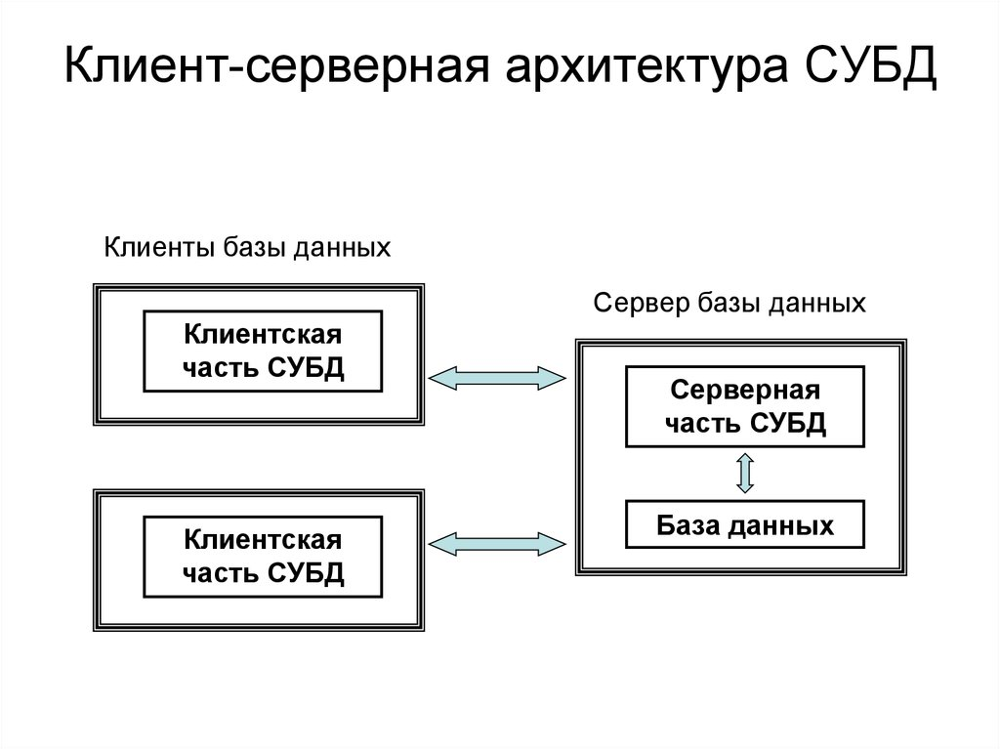
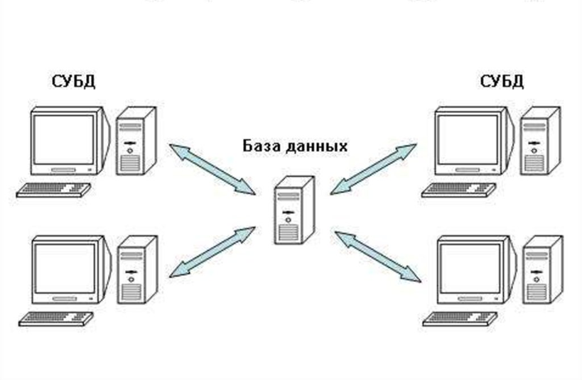

Системы управления базами данных: функции и архитектура
1. Понятие и назначение систем управления баз данных
2. Ключевой функционал СУБД по Кодду
3. Архитектуры СУБД и категории пользова телей
1. Понятие и назначение систем управления баз данных
Системы управления баз данных – это комплекс программных средств, с помощью которого можно создавать и поддерживать базу данных, а также осуществлять к ней контролируемый доступ пользователей.
Применение систем управления базами данных осуществляется в разных областях. В Data Science они нужны для хранения и анализа больших объемов структурированных и неструктурированных, а также для выполнения сложных аналитических запросов, агрегировании данных.
Системы управления базами данных действует как посредник между пользователем и самой базой данных. Она принимает запросы от программиста, обрабатывает их, обращается к хранимой информации и возвращает нужный результат. Все это происходит в несколько этапов, и при этом каждый шаг строго контролируется, так как в СУБД должна обеспечивать целостность данных, безопасность и скорость обработки данных.
Пользователь формирует этот запрос на языке SQL. Система проверяет права доступа, интерпретирует запрос и формирует план его выполнения. Далее СУБД обращается к физическим данным, которые хранятся на жестких дисках или в облачном хранилище. Если запрос сложный, система может задействовать индексы, кеш или другие механизмы оптимизации. После получения нужных данных СУБД может их преобразовать — например, отсортировать или отформатировать – и только потом вернуть пользователю.
Если речь идет не только о чтении, но и об изменении данных (например, добавление или удаление записей), то в работу включается механизм транзакций. Он гарантирует, что все изменения будут либо выполнены полностью, либо не будут применены вовсе в случае ошибки. Это позволяет избежать повреждения данных и конфликтов при одновременной работе нескольких пользователей.
С помощью СУБД производятся запись данных в базу данных, их выборка по запросам пользователей и прикладных программ, обеспечивается защита данных от искажений и от несанкционированного доступа и т.п. Каждой прикладной программе СУБД предоставляет интерфейс с базой данных и располагает средствами доступа к ней.
Таким образом, СУБД играет центральную роль в функционировании информационной системы, так как обращение к базе данных возможно только через СУБД. Концепция баз данных подразумевает рост совместного использования данных различными приложениями (прикладными программами) и сокращение избыточности хранения одних и тех же данных.
Для организации управления этими процессами используется описание базы данных. В описание базы данных хранится структура всех таблиц базы данных, информация об индексах, служащих для быстрого обращения к данным, правила проверки данных и много другой специальной информации о данных. Описание базы данных является частью современной базы данных.
СУБД выполняет роль интерфейса между прикладными программами и базой данных, которая обеспечивает их независимость. СУБД реализует следующие функции:
1. Определение структуры базы данных. Как правило, создание структуры базы данных происходит в режиме диалога. СУБД последовательно запрашивает пользователей данные. В современных база данных предоставляется в виде совокупности таблиц. Рассматриваемая функция позволяет описать и создать в памяти компьютера структуру таблиц.
2. Предоставление пользователям возможности манипулировать данными.
Данные в БД хранятся в разных таблицах, которые связаны между собой. Для поддержки заданных принципов взаимосвязи данных в СУБД существуют правила ссылочной целостности. Например, между двумя связанными таблицами может быть установлено правило: при удалении записей в родительской таблице автоматически осуществляется каскадное удаление всех записей из дочерней таблицы, связанных с удаляемой записью. Транзакцией называется некоторая неделимая последовательность операций над данными БД, которая отслеживается СУБД.
В состав транзакции может входить несколько команд изменения базы данных, но либо выполняются все эти команды, либо не выполняется ни одна. Если по каким-либо причинам (сбои и отказы оборудования, ошибки в программном обеспечении) транзакция остается незавершенной, то она отменяется, т. е. происходит откат транзакции.
2. Ключевой функционал СУБД по Кодду
Ключевой функционал СУБД был сформулирован Коддом еще в начале 1980-х годов. На первом этапе насчитывалось 8 функций, позднее Кодд и другие исследователи неоднократно расширяли.
1. Доступность данных. Предоставление пользователю возможности редактирования. Удаления и извлечения данных из базы данных. При осуществлении любой из операций пользователь не должен вникать в особенности физической реализации системы, т. е. все операции должны быть прозрачны.
2. Метаописание данных. СУБД должна предоставлять системный каталог, который становится доступным внешним приложением, которое позволяет усиливать меры безопасности.
3. Параллельное управление. Реализация данного механизма одновременного многопользовательского доступа к обрабатываемым данными с гарантией корректного обновления этих данных. СУБД должна суметь избежать конфликта совместного доступа двух или большего числа пользователей к одним и тем же строкам таблицы.
4. Обработка данных в рамках транзакций. СУБД гарантирует, что база данных будет всегда находиться в непротиворечивом состоянии. Для этого операции с данными объединяются в единый блок, который называется транзакция.
5. Обеспечение целостности данных. Все содержащиеся в БД данные должны быть корректны и непротиворечивы. Это означает, что данные в таблицах могут модифицироваться только в соответствии с правилами. Существует три правила поддержания целостности: целостность доменов, целостность отношений.
6. Восстановление данных. В случае ошибок, которые могут привести к повреждению данных, СУБД должна обладать возможностью восстанавливать поврежденные данные.
7. Обмен данными. СУБД должна поддерживать современные сетевые технологии и предоставлять доступ к БД.
8. Контроль за доступом к данным. Осуществление к данным разрешается только зарегистрированным пользователям в соответствии с назначенным администратором СУБД.
3. Архитектура СУБД и категории пользователей
СУБД – это сложный вид программного обеспечения, над которым работают большие коллективы программистов. Над верхним уровнем системы расположены потребители услуг СУБД:
— Администратор БД – отвечает за планирование и физическую реализацию проекта. Администратор создает основные объекты БД, определяет правила целостности данных, создает политику безопасности. Также в распоряжении администратора входит проектирование БД;
— Программисты совместно с администраторами создают физическую модель проекта, в задание программиста входит не сколько концепция базы данных, а донесение этой концепции до конечного пользователя;
— Конечные пользователи – основной потребитель услуг СУБД, в его интересах создаются БД и прикладное ПО.
СУБД обладает системным каталогом, в котором в основном хранятся следующие сведения:
1. Описание поддерживаемых типов данных;
2. Описание развернутых БД (схем данных) и входящих в них объектов (домены, таблицы, представления);
3. Сведения об ограничениях целостности;
4. Имена и права пользователей, имеющих доступ к данным;
5. Разнообразная статистика.
Если база и все части системы находятся на одном компьютере, и ими пользуются с того же устройства, СУБД называется локальной. Если части системы находятся на разных устройствах — это распределенная СУБД.
Системы по-разному обеспечивают хранение и доступ к данным. Существуют три вида архитектуры.
Клиент-серверная. База данных находится на сервере, СУБД располагается там же. К базе могут обращаться различные клиенты — конечные устройства. Например, пользователи запрашивают информацию на конкретном сайте.
Клиент-серверная архитектура подразумевает, что прямой доступ к базе есть только у сервера — он обрабатывает обращения клиентов. Сами клиенты не обязаны иметь специальное ПО для взаимодействия с базами данных. Так для доступа к сайту не нужно устанавливать программы, которые будут обрабатывать запросы, — все сделает сервер, жестко отделенный от клиентской части.
Такие базы надежны и обычно имеют высокую доступность. Ими пользуются чаще всего.

Файл-серверная. Тут все иначе: база хранится на файл-сервере, вот СУБД — на каждом клиентском компьютере. Доступ к базе данных могут получить только устройства, на которых установлена и настроена система.
Сейчас такие системы используются очень редко, в основном во внутренних приложениях, которые работают в локальных сетях. В крупных проектах файл-серверные СУБД не применяют.

Встраиваемая. Это маленькая локальная СУБД, которая используется для хранения данных отдельной программы. Такие системы не функционируют как самостоятельные единицы, а встраиваются в программный продукт как модуль. Они нужны при разработке локальных приложений, целиком размещаются на одном устройстве и обычно очень мало весят.
Системы управления базами данных представляют собой комплекс программных средств, выступающих в роли посредника между пользователем и базой данных, обеспечивая контролируемый, безопасный и надежный доступ к информации. Ключевой функционал СУБД, сформулированный Коддом ещё в начале 1980-х годов, включает доступность данных, метаописание, параллельное управление, обработку транзакций, обеспечение целостности, восстановление данных, обмен данными и контроль доступа. СУБД обслуживает три категории потребителей: администраторов БД (отвечающих за планирование, безопасность и проектирование), программистов (реализующих физическую модель и интерфейсы) и конечных пользователей (основных потребителей информации).
Системный каталог СУБД хранит описания типов данных, схем, объектов, ограничений целостности, прав пользователей и статистику. По месту размещения компонентов СУБД делятся на локальные (все на одном компьютере) и распределённые (на разных устройствах). По архитектуре выделяют три вида: клиент-серверную (база и СУБД на сервере, клиенты обращаются через сеть — наиболее надёжный и распространённый вариант), файл-серверную (база на сервере, но СУБД на каждом клиенте — сегодня используется редко, только в локальных сетях) и встраиваемую (компактный модуль внутри приложения для локального хранения данных). Таким образом, выбор конкретной СУБД и её архитектуры зависит от масштаба проекта, требований к надёжности, количеству пользователей и условий эксплуатации.
Изученные в рамках лекции функции и принципы работы систем управления базами данных позволяют сделать вывод о том, что СУБД представляет собой не второстепенный программный компонент, а основу функционирования современной информационной среды. Именно через неё осуществляется взаимодействие пользователя с физическим размещением данных: система принимает запросы, интерпретирует их, подбирает наиболее эффективный способ обработки, регулирует права доступа и поддерживает корректное состояние информации посредством транзакционных механизмов. Подобная организация обеспечивает снижение дублирования сведений, уменьшает зависимость прикладного программного обеспечения от структуры хранения и создаёт условия для одновременной работы большого числа пользователей без нарушения целостности данных.
Особое значение имеет функциональный набор СУБД, сформулированный Эдгаром Коддом. К числу таких возможностей относятся поддержка доступности информации, хранение метаданных, управление параллельными процессами, обеспечение транзакционной обработки, контроль ограничений целостности, механизмы восстановления после сбоев, сетевое взаимодействие и разграничение прав пользователей. Именно эти характеристики позволяют оценивать уровень надёжности и практическую применимость конкретной системы управления базами данных при решении различных задач. Рассмотрение архитектурных подходов, включая клиент-серверную, файл-серверную и встраиваемую модели, показывает, что разработка базы данных не ограничивается исключительно технической частью. Существенную роль играет организационный аспект: администратор формирует политику безопасности и распределяет доступ, программисты реализуют прикладную логику, а конечные пользователи взаимодействуют с системой через интерфейсы и прикладные средства. В связи с этим выбор определённой СУБД и архитектурной модели должен учитывать масштаб информационной системы, предполагаемую нагрузку, требования к устойчивости и условия эксплуатации. При этом системный каталог остаётся ключевым элементом управления метаданными, обеспечивая целостное функционирование всей базы данных и контроль её внутренней структуры.
Контрольные вопросы по лекции
1. Дайте определение системы управления базами данных.
2. Какие три категории потребителей услуг СУБД выделяются?
3. Какая информация хранится в системном каталоге СУБД?
4. Сравните три вида архитектуры СУБД по следующим критериям: место размещения базы данных, место размещения СУБД, область применения и уровень распространённости на сегодняшний день.